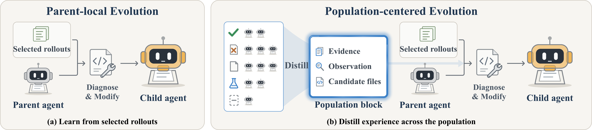
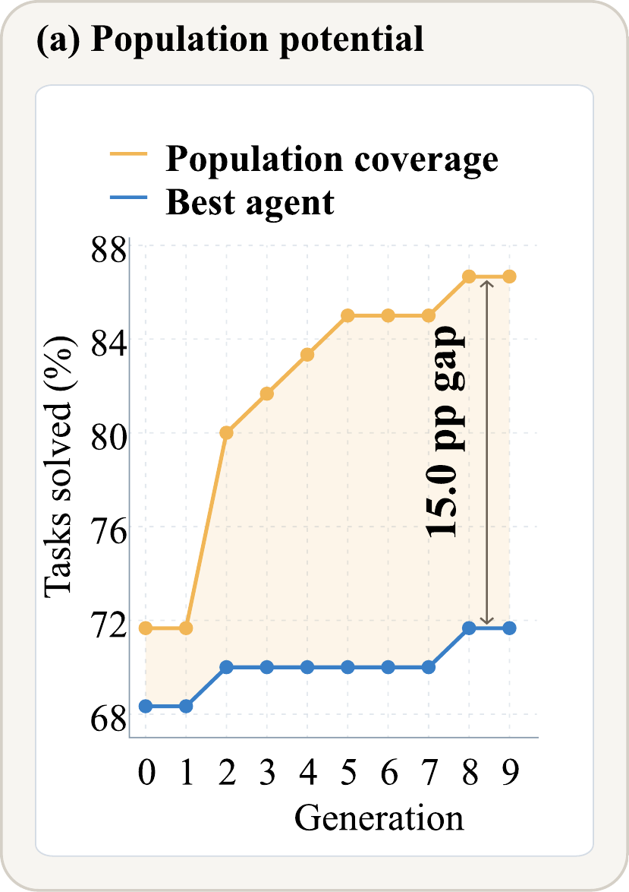
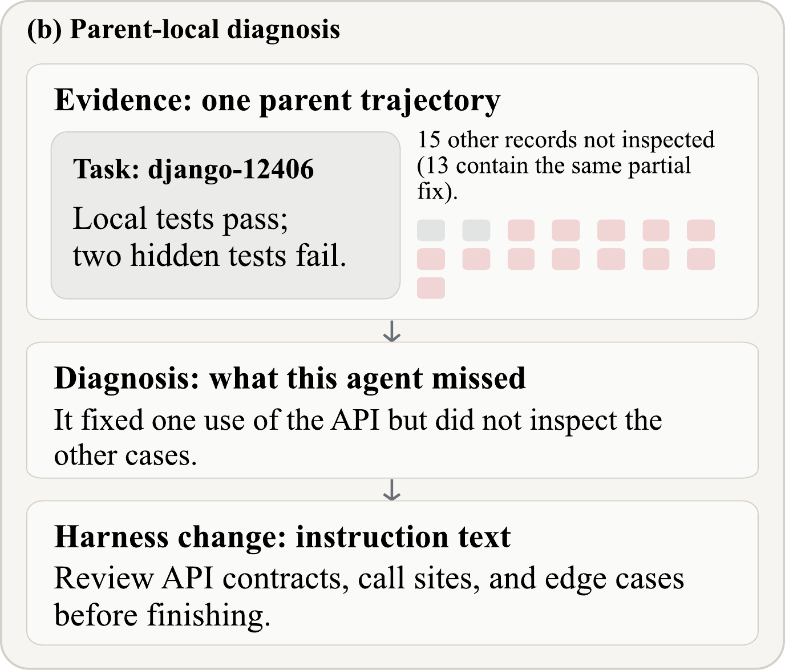
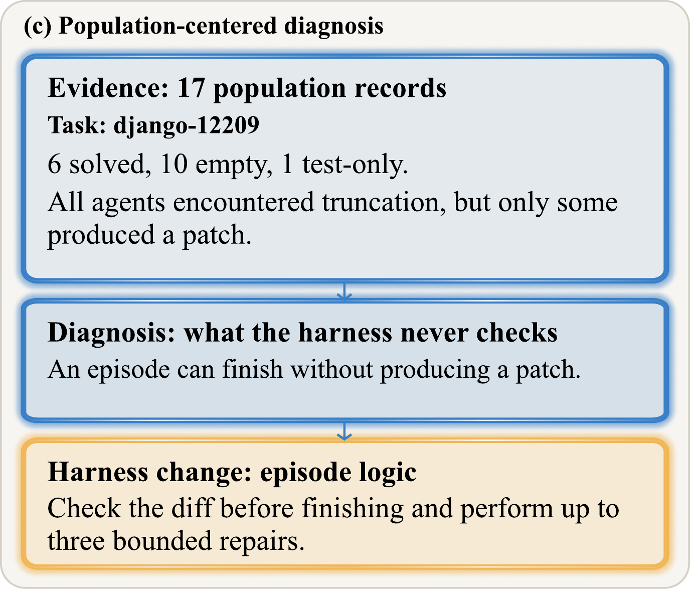
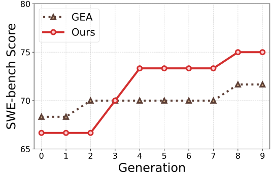
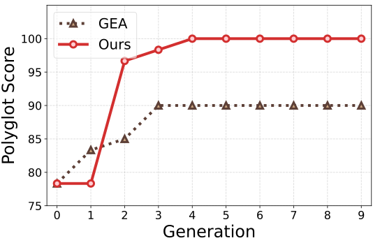
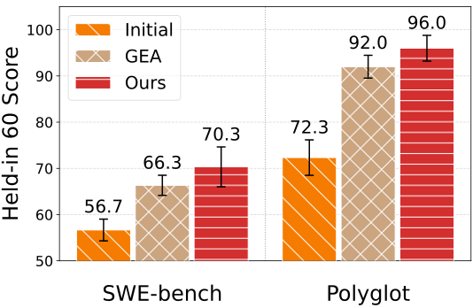

Self-improving AI systems can revise the designs that govern their own behavior. Yet existing approaches center improvement on selected parent agents and their evolutionary experience, leaving the broader population largely underused. We identify a substantial gap between population coverage (i.e., the tasks solved by at least one evolved variant) and the performance of the best individual agent. This gap shows that useful capabilities and diagnostic evidence emerge across the population without being consolidated into its leading agents.
These observations motivate the view from nowhere, a principle for agent evolution: an agent should be improved by interpreting its behavior through population-wide patterns of success, failure, and prior self-modification. We instantiate this principle as Population-Centered Evolution (PCE). PCE distils task records and modification histories from the population into a population block, which captures recurring failures, complementary successes, and the effects of previously attempted modifications to guide improvements to a selected parent’s harness.
Under matched models, initial harnesses, and evolution schedules, PCE achieves 72.1% success on SWE-bench Verified and 96.7% on Polyglot, improving over a strong group-evolution baseline by 3.2 and 5.9 percentage points. In our evaluation, PCE reduces the gap between population coverage and best-agent performance by one-third on SWE-bench and closes it on Polyglot. These results suggest that treating the population as evidence, not merely as candidates for selection, provides a complementary principle for agent evolution.
Yet prior work has not systematically measured the gap between what an evolutionary population collectively solves and what its best individual agent achieves, or examined how this gap can guide improvement. We define population coverage as the proportion of tasks solved by at least one evolved variant. As shown in Figure 1a, in one of our GEA runs the evolved population covers 9 more of the 60 held-in tasks than its best individual agent, corresponding to a 15.0 percentage-point gap. This gap shows that successful outcomes remain distributed across the population rather than being fully consolidated into its leading agent. The associated task records allow us to compare variants that succeed and fail on the same task. The population should therefore be treated not only as a pool for parent selection, but also as comparative evidence for deciding how a selected parent should improve.
These observations motivate the view from nowhere as a principle for agent evolution. It holds that decisions about how to improve an agent should be grounded in patterns of success, failure, and prior self-modification across the population. For a given task, population outcomes show whether a failure is isolated or recurring, execution records reveal how successful and unsuccessful variants differ, and modification histories indicate which remedies have already been attempted. Together, these comparisons provide a broader basis for diagnosing a selected parent and guiding its improvement.



In summary, we make three contributions:
PCE operates population-centered evolution through two stages, as shown in Figure 2. Population distillation compares task records and modification histories across evaluated agent variants and summarizes the findings in a population block. Diagnosis then checks this population-level account against a selected parent's records and source code before proposing a harness modification.
We note that PCE distinguishes the variants used as evidence from those eligible for parent selection. It maintains a population 𝒱 containing all evaluated agent variants whose task records are available, and an archive 𝒜 ⊆ 𝒱 containing the variants eligible to become parents. Each variant is associated with its harness, task records, and history of self-modification. A variant can therefore inform future improvements even when it is not selected as a parent.
For the task selected to diagnose a parent, population distillation considers all available task records in 𝒱, including the initial agent's record when available. Each record contains an execution log, a submitted task patch, and an evaluation outcome. The corresponding harness can be reconstructed from the initial source and the variant's chain of self-modifications. These materials allow distillation to compare not only which variants succeed or fail, but also how their execution and harness designs differ.
Population distillation combines programmatic measurement with agent-based analysis. A program first counts the outcomes across all available records. The distillation agent then inspects relevant execution logs, task patches, harness source, and earlier self-modifications. It compares successful and unsuccessful variants, identifies recurring outcomes, and examines whether previous harness changes resolved or preserved the observed behavior. Since the full records can be large, the agent chooses which records and source files to inspect within its analysis budget.
The resulting population block contains three fields. Outcome evidence reports the program-computed distribution of task outcomes across the population. A cross-agent observation summarizes a pattern found by comparing variants and provides a hypothesis about why their outcomes differ. Candidate files identify parts of the harness that may implement the relevant behavior and should be examined during diagnosis. This field is left empty when distillation cannot identify a plausible location. Separating measured outcomes from their interpretation preserves a factual population summary while giving diagnosis a focused starting point without prescribing the modification.
The population block provides a diagnostic hypothesis rather than prescribing a modification. Diagnosis combines this block with the selected parent's source code and task records to determine whether the population-level pattern applies to the current harness. It examines the candidate files when provided, but may inspect other parts of the harness as needed. A mechanism associated with successful variants may be absent from the parent, while an earlier modification may already be present but remain insufficient. Diagnosis uses the parent's execution behavior and implementation to distinguish between these possibilities.
Based on this assessment, diagnosis proposes one harness modification and describes how it should be implemented. The self-modification step applies the proposal to a copy of the parent's harness, producing a child agent. The modification may change the agent's prompts, tools, or execution workflow, while the foundation model and inference limits remain fixed. The child is then passed to the evaluation stage of the evolution loop.
We evaluate PCE on SWE-bench Verified and Polyglot. SWE-bench Verified evaluates repository-level issue resolution, while Polyglot contains 225 coding tasks across six programming languages. Following DGM, we use 200 SWE-bench Verified tasks and all 225 Polyglot tasks. For each benchmark, 60 tasks are held in for evolution. The remaining 140 SWE-bench tasks and 165 Polyglot tasks are held out for final evaluation, forming Overall 200 and Overall 225. We also evaluate on an additional set of 60 SWE-bench tasks spanning 12 repositories.
We compare PCE with GEA, the closest group-evolution baseline. To isolate the effect of population-centered evolution, both methods use the same foundation models, initial harness, parent-selection procedure, diagnosis prompt, modifiable files, and evaluation protocol. Each method runs for ten generations and produces two children per generation. DeepSeek Flash performs task execution and self-modification. DeepSeek Pro performs diagnosis for both methods and population distillation for PCE. We also evaluate the shared initial agent as a reference.
RQ1: Does PCE evolve stronger agents that generalize beyond the search evaluation?
Table 1 reports the performance of the best agents evolved within 10 generations. Both GEA and PCE improve substantially over the shared initial agent. PCE reaches an Overall success rate of 72.1% on SWE-bench and 96.7% on Polyglot, exceeding GEA by 3.2 and 5.9 percentage points, respectively. The Polyglot result is particularly notable because PCE continues to improve performance even when GEA already solves more than 90% of the tasks.
| Benchmark | Method | Model | Gen. | Best ↑ | Overall ↑ |
|---|---|---|---|---|---|
| SWE-bench | OpenHands† | GPT-5 | N/A | N/A | 71.8 |
| DGM | Claude 3.5 Sonnet | 80 | — | 50.0 | |
| DGM‡ | Claude 3.7 Sonnet | 80 | — | 59.5 | |
| DGM‡ | o3-mini | 80 | — | 33.0 | |
| DGM (GEA)† | Haiku/Sonnet 4.5 | 60 | — | 56.7 | |
| GEA† | Haiku/Sonnet 4.5 | 30 | — | 71.0 | |
| Initial | DeepSeek-V4-Flash | 0 | N/A | 52.0 | |
| GEA | DeepSeek-V4-Flash | 10 | 71.7 | 68.9 | |
| PCE | DeepSeek-V4-Flash | 10 | 75.0 | 72.1 | |
| Polyglot | Aider† | GPT-5 (high) | N/A | N/A | 52.0 |
| DGM | o3-mini | 80 | — | 30.7 | |
| DGM‡ | Claude 3.5 Sonnet | 80 | — | 33.3 | |
| DGM‡ | Claude 3.7 Sonnet | 80 | — | 36.8 | |
| DGM (GEA)† | Haiku/Sonnet 4.5 | 40 | — | 68.3 | |
| GEA† | Haiku/Sonnet 4.5 | 20 | — | 88.3 | |
| Initial | DeepSeek-V4.1-Flash | 0 | N/A | 65.1 | |
| GEA | DeepSeek-V4.1-Flash | 10 | 90.0 | 90.8 | |
| PCE | DeepSeek-V4.1-Flash | 10 | 100.0 | 96.7 |
The gains are not limited to a single search or evaluation. Across two independent SWE-bench runs for each method, both PCE runs achieve higher best search scores than either GEA run, as reported in Table 2. When the selected agents are independently evaluated 5 times on Held-in 60, PCE retains a mean advantage of 4.0 percentage points on both benchmarks (Figure 3c). PCE also outperforms GEA on all three held-out task sets. Since held-out tasks constitute the majority of Overall 200 and Overall 225, these results show that the gains extend beyond the tasks used during evolution.
For context, Table 1 also reports published results for DGM, GEA, OpenHands, and Aider under their original models and protocols. These values are reference points rather than controlled comparisons. Our main conclusion is based on the matched PCE and GEA runs.



RQ2: Does PCE consolidate population-wide successes into stronger individual agents?
Table 2 reports the highest search score and the minimum score among the top three and top five evolved variants. PCE improves all three measures on both benchmarks. On SWE-bench, even the fifth-ranked PCE variant performs comparably to GEA's best variant. On Polyglot, the fifth-ranked PCE variant outperforms GEA's best. The gains therefore extend beyond a single exceptional agent.
| Benchmark | Method | Top-1 ↑ | Top-3 min. ↑ | Top-5 min. ↑ | Union | Gap ↓ |
|---|---|---|---|---|---|---|
| SWE-bench | GEA | 70.0 ± 2.4 | 66.7 ± 2.4 | 66.7 ± 2.4 | 84.2 ± 3.5 | 14.2 ± 1.2 |
| PCE | 75.0 ± 0.0 | 72.5 ± 1.2 | 70.8 ± 1.2 | 85.0 ± 0.0 | 10.0 ± 0.0 | |
| Polyglot | GEA | 90.0 | 85.0 | 83.3 | 100.0 | 10.0 |
| PCE | 100.0 | 98.3 | 96.7 | 100.0 | 0.0 |
PCE also brings its leading agents closer to what the population collectively solves. Population coverage measures the fraction of tasks solved by at least one evaluated variant, while the coverage gap is the difference between this union and the best-agent score. On SWE-bench, PCE and GEA achieve similar population coverage, but PCE reduces the mean gap from 14.2 to 10.0 percentage points. On Polyglot, both populations cover all 60 held-in tasks. GEA retains a 10.0-point gap, whereas PCE closes the gap with a single agent that solves the full task set.
The reduction does not result from PCE exploring a substantially larger set of solvable tasks. Instead, with similar population coverage, PCE produces leading variants that capture more of the successful outcomes distributed across the population. This result directly supports the central motivation for using population-wide evidence during agent evolution.
RQ3: Does population-wide evidence provide gains beyond additional parent-only analysis?
We conduct an ablation on Polyglot that compares GEA, parent-only distillation, and PCE under the same evolution and evaluation settings. Parent-only distillation uses the same distillation model, tools, step budget, and output format as PCE, but restricts its inputs to the selected parents' task records, modification histories, and source code. This control separates the value of population-wide evidence from the effect of adding another analysis step.
As shown in Table 3, parent-only distillation achieves a best search score of 91.7%, close to GEA's 90.0%. Both methods obtain the same mean success rate of 92.0% across 5 evaluations of their selected agents. PCE instead reaches a perfect search score and retains a mean success rate of 96.0%, 4 percentage points above both alternatives.
| Method | Best | Mean ± sd | Intersection | Union |
|---|---|---|---|---|
| GEA | 90.0 | 92.0 ± 2.5 | 85.0 | 100.0 |
| Parent distillation | 91.7 | 92.0 ± 4.3 | 78.3 | 98.3 |
| Population distillation (PCE) | 100.0 | 96.0 ± 2.8 | 88.3 | 100.0 |
The repeated evaluations further show that PCE solves more tasks consistently. All three methods solve nearly the full task set at least once, as reflected by their similar Union scores. PCE nevertheless achieves the highest Intersection, solving 88.3% of the tasks in every evaluation, compared with 85.0% for GEA and 78.3% for parent-only distillation. Within this Polyglot ablation, the results show that the gains come from broadening the evidence beyond the selected parents, rather than from additional analysis alone.
Effect on diagnostic proposals. We also conduct a fixed-context probe to examine how the supplied evidence changes diagnosis. Across 3 SWE-bench contexts, we hold the focal parent, source code, patch history, and task record fixed, vary the auxiliary evidence, and generate five proposals per condition. Adding a population block changes the main target of diagnosis in two of three contexts. On Sphinx-7748 task, proposals addressing truncation recovery increase from two of five to all five. On Sphinx-9229 task, the population block produces two proposals for a post-episode patch check, while GEA and the raw-trajectory controls produce only instruction-level changes. No comparable shift appears on Sphinx-8638. These results suggest that a population block can redirect diagnosis from local instruction refinement toward changes in the agent’s execution logic. They also indicate that distilling cross-agent patterns can provide guidance that is not reproduced by simply supplying additional raw trajectories. Since the proposals are not implemented or evaluated, this analysis characterizes how population evidence affects diagnostic behavior rather than its downstream performance.
RQ4: Does PCE achieve better performance at the cost of higher token consumption?
Table 4 shows that PCE reduces total token consumption by 36% on SWE-bench and 59% on Polyglot relative to GEA. These totals cover the complete evolution run, including task execution, diagnosis, self-modification, and population distillation. PCE also makes fewer model requests on both benchmarks. Its performance gains therefore do not come from a larger inference budget.
| Metric | SWE-bench | Polyglot | ||
|---|---|---|---|---|
| GEA | PCE | GEA | PCE | |
| Overall success (%) ↑ | 68.9 | 72.1 | 90.8 | 96.7 |
| Total tokens (billions) ↓ | 2.98 | 1.92 | 0.99 | 0.41 |
| Total requests ↓ | 114,629 | 69,539 | 52,034 | 28,823 |
| Distillation calls | 0 | 758 | 0 | 775 |
| Evaluation episodes | 1,100 | 1,200 | 1,147 | 1,177 |
| Mean trajectory length, solved (k chars) ↓ | 215 | 146 | 101 | 65 |
| Mean trajectory length, unsolved (k chars) ↓ | 354 | 242 | 126 | 60 |
| Episodes above 500k chars ↓ | 158 | 45 | 4 | 1 |
The reduction is not a result of evaluating fewer task episodes. PCE evaluates more episodes than GEA on both benchmarks, but produces substantially shorter trajectories for both solved and unsolved attempts. Extremely long trajectories also become less frequent. On SWE-bench, the number of trajectories exceeding 500,000 characters falls from 158 to 45. PCE therefore performs more evaluations while consuming fewer tokens overall.
These results suggest that population-wide evidence makes the evolutionary process more directed. Population distillation identifies recurring outcomes and informs harness changes that can affect later task attempts. Figure 1c provides one example, where a recurring empty-patch pattern leads to an explicit patch check and bounded repair procedure. This case does not by itself explain the aggregate savings, but it illustrates how population-guided modifications can prevent inefficient behavior from recurring. PCE therefore improves both performance and token efficiency, rather than exchanging a larger inference budget for stronger agents.